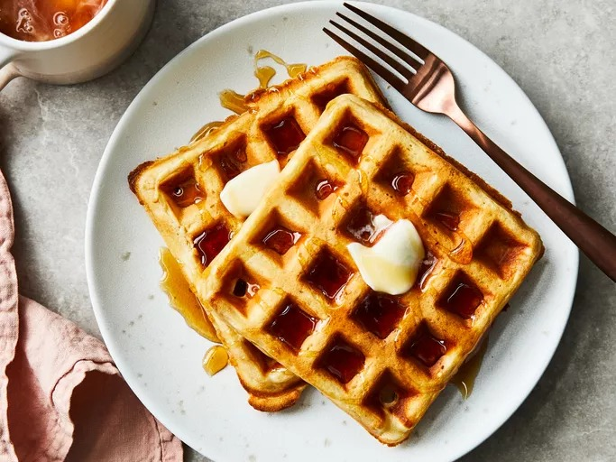

Classic Waffles

These classic waffles are the definition of a homemade breakfast treat,
featuring a golden, crispy exterior and a soft, airy center. The batter is
enriched with melted butter and a touch of vanilla extract, producing a
comforting aroma and a perfectly customizable base for toppings like
syrup, fruit, or whipped cream.
Ingredients
- 2 cups all-purpose flour
- 1 teaspoon salt or to taste
- 4 teaspoons baking powder
- 2 tablespoons white sugar
- 2 large eggs
- 1 ½ cups warm milk
- ⅓ cup butter, melted
- 1 teaspoon vanilla extract
Steps
- Gather all ingredients.
-
Mix flour, salt, baking powder, and sugar together in a large bowl; set
aside. Preheat waffle iron to desired temperature.
- Beat eggs in a separate bowl; stir in milk, butter, and vanilla.
- Pour milk mixture into flour mixture; beat until blended.
- Ladle batter into a preheated waffle iron.
- Cook waffles until golden and crisp.
- Serve immediately and enjoy!
Odin Recipes list